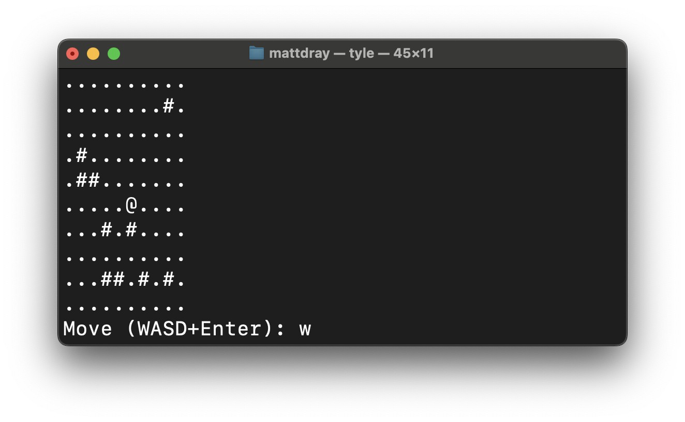

[project]
name = "2026-02-01-tyle"
version = "0.1.0"
requires-python = ">=3.12"
dependencies = []
tl;dr
I’m writing tyle to help me Python. And help me fun?
Very early access
I’ve started tyle, a concept Python CLI that contains the foundations for a little in-terminal tile- and turn-based game.
The rudimentary tool is available to install. I like uv for this job1:
uv tool install git+https://github.com/matt-dray/tyle.gitYou can start a ‘game’ (heavy emphasis on those quote marks) by typing:
tyle.......#..
..........
.##..#....
....#....#
......#...
.....@....
..#.......
........#.
..........
....#.....
Move (WASD+Enter): The gameboard is just a tile grid printed to the terminal. You (the @ symbol) can travel around the floor tiles (.), but not through obstacles (#, which are randomised) or off the map.
At the prompt you can type W and Enter to move up, for example. Q and Enter will quit.
Aaand that’s it for now2.
Like Rogue?
This game style may be familiar because it’s a fragment of the blueprint for the classic videgame Rogue (1980). Key features are things like text-based graphics, turn-based player interaction, and permadeath. Later games aped this style and adapted with it, giving rise to the ‘roguelike’ and ‘roguelite’ genres.
The scope here is far tighter: I promise nothing. So let’s call this a roguelike-like for now.
A sidequest
To explain the meta, I’ve been making some twee little projects to help me learn Python. First jot, then pet. tyle is also a Python-backed CLI but is helping me learn more about classes.
As someone with a background in R, I tend to think every nail can be hammered with a function. R supports classes, of course, most recently with the {S7} package3. But the approach feels far more at home in Python with its greater focus on ‘programming’ than ‘doing statistics’4.
In tyle, there are currently three main classes:
Tilethat represent the tiles of the world mapTileGridto generate the world map from tile objectsEntityto create the player character
Each of these have properties and methods that allow them to store data and be queried in certain ways.
Tile objects contain information like whether they’re traversable; tile-grid objects store the tile grid as a list of lists of tile objects and are responsible for printing the map; and entities serve as the blueprint for creating the player object, hosting parameters for tile coordinates and hit points, for example.
So, at its core, the map can be indexed by ‘rows’ and ‘columns’ that are really just sublist and list-element positions. When printing the map, the player is drawn over the user-specified position if the move clears legality checks (i.e. you can’t move onto an obstacle nor exit the map boundary).
Grouting
As it stands, you can see the Python code in the tiles.py file. The simplest possible example of a class there is Tile:
class Tile:
def __init__(self, symbol: str, traversable: bool) -> None:
self.symbol = symbol
self.traversable = traversableI’ve shown the type hints5 but hidden the docstrings for brevity.
So you:
- Declare with
class. - Use an UpperCamelCase name by convention.
define a function to__init__ialise the class, with reference to:self, i.e. the class itself.- ‘normal’ function arguments (
symbolis the text character representing the tile andtraversableis whether the tile can be moved across).
- Set properties that may just be the arguments, or passed through other functions.
define functions (methods) within the body of the class (not shown here becuase theTileclass doesn’t currently have any).
And then you can call it like:
tile = Tile(".", True)So we’ve created a tile object with the Tile class and parameters for its symbol when printed (a period) and whether it can be moved across (it can). And we can access these properties (and methods) with dot notation, like:
tile.symbol'.'That’s a very simple example. You can imagine how the Entity class has parameters like hp (hit points) and TileGrid has a draw method to print the map to the screen.
Later we could create subclasses from the Entity class, so Player and Enemy could inherit the properties and methods from Entity, but maybe Player has a name or something.
Hack
But I’ve read about the {r.oguelike} R package on this blog before. Have you run out of ideas?
Uh-oh, I’ve been rumbled.
Listen, agitator: R was never the ‘right’ choice for this type of thing. Not least because that particular ‘game’ had to be played in the R console, rather than the terminal directly.
Python is far more suited to this type of activity. In fact, Python can be used as a full-blown game engine, aided by tools like PyGame. In fact, there are several roguelike-specific packages to help you build roguelikes specifically, like libtcod.
I’m ignoring these because I want to use this little project to help me learn Python skills, not roguelike-making skills, specifically. The logic, yes, but also stuff like type hints, docstrings, writing modules, creating CLIs, etc.
Game over?
As ever, I may stop there6. But there are some obvious improvements that would also strengthen my skills.
A bunch of stuff from {r.oguelike} could be interesting to translate here, like procedural dungeons, enemy pathfinding and a styled interface.
Of course, we probably want to ‘listen’ to keyboard input, which is a more natural approach to interactivity versus hitting Enter all the time
It would also be nice to improve the CLI itself to accept various options, rather than generating the same-size grid and player starting-position every time.
Oh yeah and, y’know, make it into like an actual game with winning and losing conditions? Eh, maybe.
Environment
Session info
Footnotes
And
uv tool update tyleanduv tool uninstall tyledo what you think they do.↩︎Pfft, game awards? More like shame awards in comparison to this, amirite?↩︎
I wouldn’t dream of taking the cutting edge and being frivolous with it.↩︎
Wow, a take that’s hotter than the sun.↩︎
Astral have brought ty out of version beta_BETA_draft_v0.0.0.0.0.900000, huzzah. You can check type hints cheaply with uv and without installing anything else, like
uvx ty check. Oruvx ruff formatanduv ruff checkfor linting and formatting. Real noice.↩︎Take a shot every time you read that phrase on this blog.↩︎
Reuse
CC BY-NC-SA 4.0